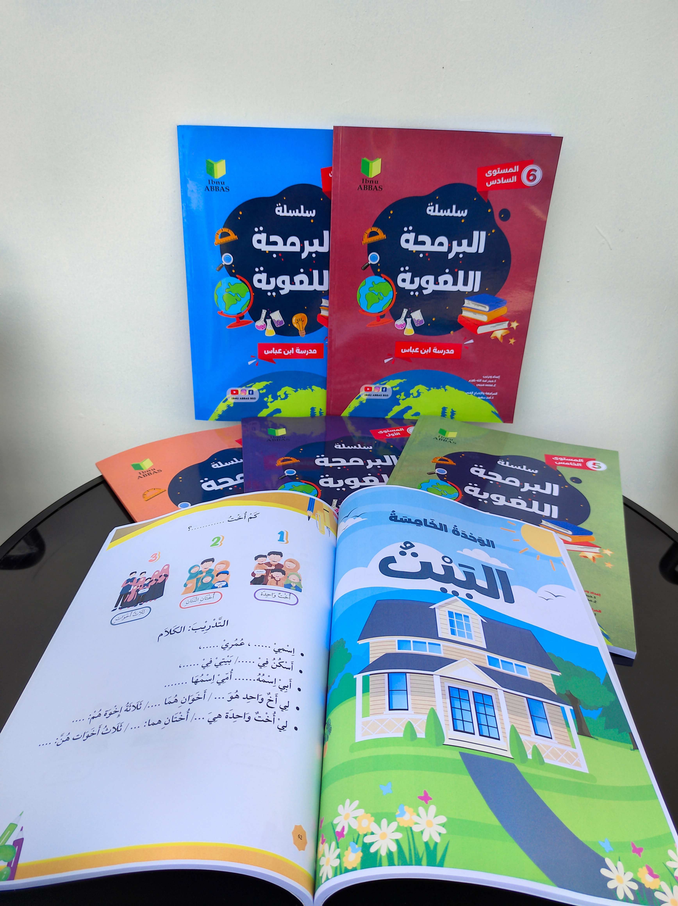

- Full Color
- Pengerjaan Tepat Waktu
- Harga Kompetitif
- Desain Bisa Dibuatkan
Cetak Buku Ajar, Novel, Modul & Buku Masuk PTN
Full Color • Soft & Hard Cover • Harga Kompetitif • Yogyakarta
Butuh cetak buku ajar, novel, modul, buku akademik, atau buku masuk PTN di Sleman, Yogyakarta? RAW Media melayani cetak buku profesional dengan pilihan ukuran lengkap, bahan kertas berkualitas, hasil warna tajam, proses cepat, dan harga kompetitif untuk kebutuhan cetak satuan hingga ribuan eksemplar. Desain layout dapat dibuatkan oleh tim kami.
Pesan Online
Cetak Buku Profesional untuk Kebutuhan Akademik, Sastra, dan Pendidikan
Cetak buku adalah solusi untuk menerbitkan karya tulis, buku ajar, novel, modul, buku akademik, hingga buku masuk PTN secara profesional. Buku banyak digunakan oleh dosen, guru, penulis, sekolah, kampus, pesantren, dan penerbit untuk menyampaikan ilmu, cerita, atau informasi kepada pembaca.
Di RAW Media Indonesia, Anda bisa mencetak buku dengan berbagai pilihan ukuran seperti A5, A4, B5, Unesco, A4+, hingga ukuran custom. Setiap pesanan dapat disesuaikan dari sisi bahan kertas, gramasi, cover, finishing, jumlah cetak, dan model jilidan agar hasilnya sesuai kebutuhan Anda.
Pilihan Bahan & Finishing
Untuk kebutuhan profesional, kami menyediakan pilihan bahan seperti HVS, Book Paper, Art Paper, serta opsi finishing soft cover, hard cover, laminasi glossy, laminasi doff, dan spot UV. Dengan hasil cetak tajam dan warna solid, buku Anda akan terlihat lebih menarik dan nyaman dibaca.
Buku Masuk PTN & Buku Akademik
Kami juga melayani cetak buku masuk PTN, buku panduan belajar, buku soal, dan buku akademik yang membutuhkan tampilan rapi, warna tajam, serta tahan lama. Cocok untuk bimbel, sekolah, dan lembaga pendidikan yang ingin menyediakan buku berkualitas bagi siswa.
Pemesanan Online Mudah
Layanan cetak buku RAW Media juga cocok untuk Anda yang butuh proses pemesanan cepat tanpa harus datang langsung. Cukup kirim file desain, tentukan spesifikasi, konsultasikan kebutuhan dengan admin, lalu pesanan diproses dan dikirim ke alamat Anda di seluruh Indonesia.
Layanan Terkait
Spesifikasi Cetak Buku
Kami menyediakan berbagai pilihan spesifikasi cetak buku yang fleksibel, mulai dari ukuran standar hingga custom, pilihan kertas tipis sampai tebal, cover soft/hard, serta opsi finishing untuk buku ajar, novel, modul, buku akademik, dan buku masuk PTN.
| Jenis Buku | Ukuran | Bahan Kertas | Cover | Finishing | Keterangan |
|---|---|---|---|---|---|
| Buku Ajar | A5, A4, B5 | HVS 70gsm, Book Paper | Soft Cover | Laminasi Glossy/Doff | Cocok untuk dosen, guru, dan sekolah |
| Novel | A5, Unesco | Book Paper 57gsm | Soft Cover | Laminasi Doff | Ringan dan nyaman dibaca |
| Modul | A4, B5 | HVS 80gsm | Soft Cover | Spiral / Perfect Binding | Cocok untuk pelatihan dan kursus |
| Buku Akademik | A5, B5, A4+ | Book Paper, Art Paper | Hard Cover | Laminasi + Spot UV | Untuk referensi dan buku ilmiah |
| Buku Masuk PTN | A4, B5 | HVS 80gsm, Art Paper | Soft/Hard Cover | Laminasi Glossy/Doff | Untuk bimbel, sekolah, dan panduan belajar |
| Self Publishing | Custom | Sesuai kebutuhan | Soft/Hard Cover | Custom | Untuk penulis independen |
Estimasi Harga Cetak Buku
Harga cetak buku dapat berbeda tergantung ukuran, jenis kertas, jumlah cetak, cover, finishing, dan tingkat kebutuhan produksi.
Tabel berikut adalah estimasi harga awal untuk membantu Anda memperkirakan budget sebelum konsultasi dengan admin.
| Produk | Spesifikasi Estimasi | Qty | Estimasi Harga Mulai Dari |
|---|---|---|---|
| Cetak Buku A5 | HVS 70gsm, soft cover, full color | 50 buku | Rp1.500.000 |
| Cetak Buku A5 (100 pcs) | Book Paper, soft cover, full color | 100 buku | Rp2.500.000 |
| Cetak Buku A4 | HVS 80gsm, soft cover, full color | 50 buku | Rp2.000.000 |
| Cetak Novel A5 | Book Paper 57gsm, soft cover | 100 buku | Rp2.750.000 |
| Cetak Buku Masuk PTN | A4, Art Paper, soft cover, full color | 50 buku | Rp2.000.000 |
| Cetak Buku Hard Cover | A5, Book Paper, hard cover + laminasi | 50 buku | Rp3.000.000 |
| Cetak Custom | Ukuran, bahan, dan finishing sesuai kebutuhan | Custom | Hubungi Admin |
Panduan Cetak Buku
Agar hasil cetak buku terlihat profesional, pastikan desain yang Anda kirim sudah sesuai dengan kebutuhan produksi. Buku yang baik tidak hanya menarik secara visual, tetapi juga mudah dibaca, memiliki struktur yang jelas, dan memuat informasi lengkap.
Rekomendasi Ukuran Buku
- A5: ukuran paling umum untuk novel, buku ajar, dan modul.
- A4: cocok untuk buku akademik, modul pelatihan, buku masuk PTN, dan buku bergambar.
- B5: alternatif A5 yang lebih lega untuk buku referensi.
- Unesco: ukuran ringkas untuk novel dan buku saku.
- Custom: untuk kebutuhan khusus seperti katalog atau buku panduan.
Tips Memilih Bahan Kertas
Jenis kertas sangat memengaruhi tampilan dan kenyamanan membaca. Untuk novel, gunakan Book Paper 57gsm agar ringan. Untuk buku ajar dan modul, HVS 70–80gsm lebih ekonomis. Untuk buku akademik, buku masuk PTN, dan referensi, Art Paper atau Book Paper lebih tebal dan premium.
Cara Pesan Cetak Buku Online
- Siapkan file desain dalam format PDF, CDR, AI, PSD, JPG, atau PNG resolusi tinggi.
- Tentukan ukuran buku, jumlah cetak, bahan kertas, cover, dan finishing.
- Hubungi admin RAW Media melalui WhatsApp atau form pesan online.
- Kirim file desain dan detail kebutuhan cetak buku Anda.
- Admin akan memberikan estimasi harga dan waktu produksi.
- Setelah pembayaran dikonfirmasi, pesanan langsung masuk proses produksi.
- Buku dapat dikirim ke alamat Anda atau diambil sesuai kesepakatan.
Checklist File Siap Cetak
- Resolusi desain minimal 300 dpi.
- Mode warna disarankan CMYK.
- Teks penting tidak terlalu dekat dengan garis potong.
- Tambahkan bleed sekitar 2–3 mm jika diperlukan.
- Pastikan nomor telepon, alamat, QR code, dan logo sudah benar.
- Simpan file dalam format PDF untuk hasil cetak yang lebih aman.
Pertanyaan Umum Cetak Buku
Buku apa saja yang bisa dicetak di RAW Media?
RAW Media melayani cetak buku ajar, novel, modul, buku akademik, buku masuk PTN, self publishing, dan buku custom lainnya.
Apakah bisa cetak buku masuk PTN full color?
Bisa. Buku masuk PTN dapat dicetak full color dengan pilihan ukuran A4, B5, atau custom, kertas HVS/Art Paper, serta cover soft atau hard cover.
Berapa lama proses cetak buku?
Waktu produksi umumnya 5–14 hari kerja setelah desain disetujui dan pembayaran dikonfirmasi. Untuk jumlah besar atau finishing khusus bisa lebih lama; hubungi admin untuk estimasi pasti.
Apakah bisa cetak buku dengan jumlah sedikit?
Bisa. Minimum order dapat menyesuaikan kebutuhan, mulai dari cetak satuan hingga ribuan eksemplar. Harga per buku lebih efisien untuk jumlah besar.
Apa saja pilihan ukuran dan kertas buku?
Ukuran: A5, A4, B5, Unesco, A4+, dan custom. Kertas: HVS 70–80gsm, Book Paper 57–72gsm, Art Paper. Cover soft/hard, finishing glossy, doff, atau spot UV.
Bagaimana cara mengetahui harga cetak buku?
Harga bergantung pada ukuran, jenis kertas, jumlah halaman, jumlah cetak, cover, dan finishing. Tabel estimasi di atas menjadi gambaran awal; hubungi admin untuk penawaran sesuai kebutuhan.
Bagaimana cara memesan cetak buku?
Siapkan file desain dan detail ukuran, jumlah, kertas, cover, serta finishing. Hubungi admin melalui WhatsApp atau formulir pemesanan untuk konsultasi dan estimasi harga.
Apakah bisa kirim ke luar kota Yogyakarta?
Bisa. RAW Media mengirim buku ke seluruh Indonesia melalui ekspedisi terpercaya. Biaya dan estimasi pengiriman dikonfirmasi saat pemesanan.
Format file apa yang disarankan untuk cetak buku?
Disarankan PDF resolusi minimal 300 dpi, mode warna CMYK, dengan bleed 2–3 mm. Format CDR, AI, PSD, JPG, atau PNG resolusi tinggi juga dapat diterima setelah dikonfirmasi.
Apakah RAW Media menyediakan jasa desain dan ISBN?
RAW Media menyediakan jasa desain layout buku. Untuk ISBN, kami dapat mengarahkan proses pengajuan sesuai ketentuan Perpusnas. Hubungi admin untuk informasi lebih lanjut.
Kenapa Cetak Buku di RAW Media?
Cetak buku di RAW Media membantu Anda mendapatkan hasil cetak yang rapi, menarik, dan siap dibagikan dengan proses pemesanan yang mudah. Kami menyediakan pilihan spesifikasi fleksibel, harga kompetitif, dan layanan cetak buku online untuk pelanggan di Sleman, Yogyakarta, dan seluruh Indonesia.
Hasil Cetak Tajam
Kami menggunakan proses cetak berkualitas untuk menghasilkan warna yang solid, teks yang jelas, dan tampilan buku yang lebih menarik. Cocok untuk kebutuhan promosi, akademik, maupun penerbitan.
Opsi Custom
Anda bisa memilih ukuran A5, A4, B5, Unesco, A4+, hingga custom. Pilihan bahan seperti HVS, Book Paper, Art Paper, serta finishing glossy, doff, spot UV tersedia sesuai kebutuhan.
Pesan Online
Tidak perlu repot datang langsung. Cukup kirim file desain dan spesifikasi melalui admin, lalu pesanan Anda akan diproses. Cocok untuk Anda yang mencari percetakan buku murah di Yogyakarta dengan proses cepat dan praktis.
Desain Bisa Dibuatkan
Tim layout kami siap membantu mendesain cover dan isi buku agar tampil profesional dan siap cetak.
Workshop Kami
Balangan, RT.02/RW.04, Sendangrejo, Kec. Minggir, Sleman, DIY 55562
Jam Operasional:
- Senin – Sabtu: 09.00 – 17.00 WIB
- Minggu: Tutup
Kontak:
- 085231092020
- 085231092020 (WhatsApp)